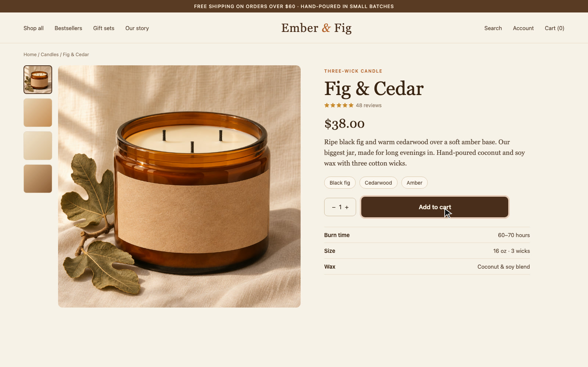
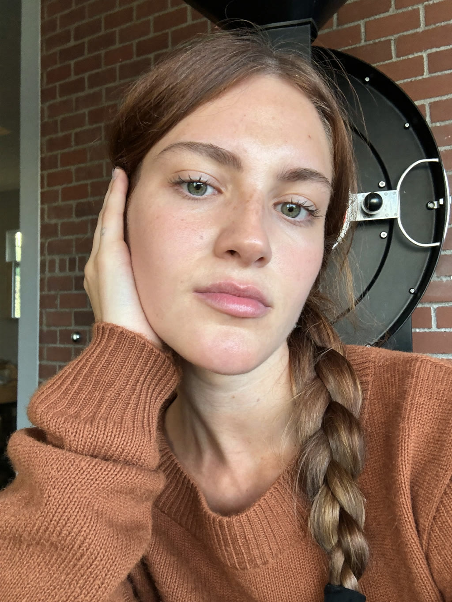
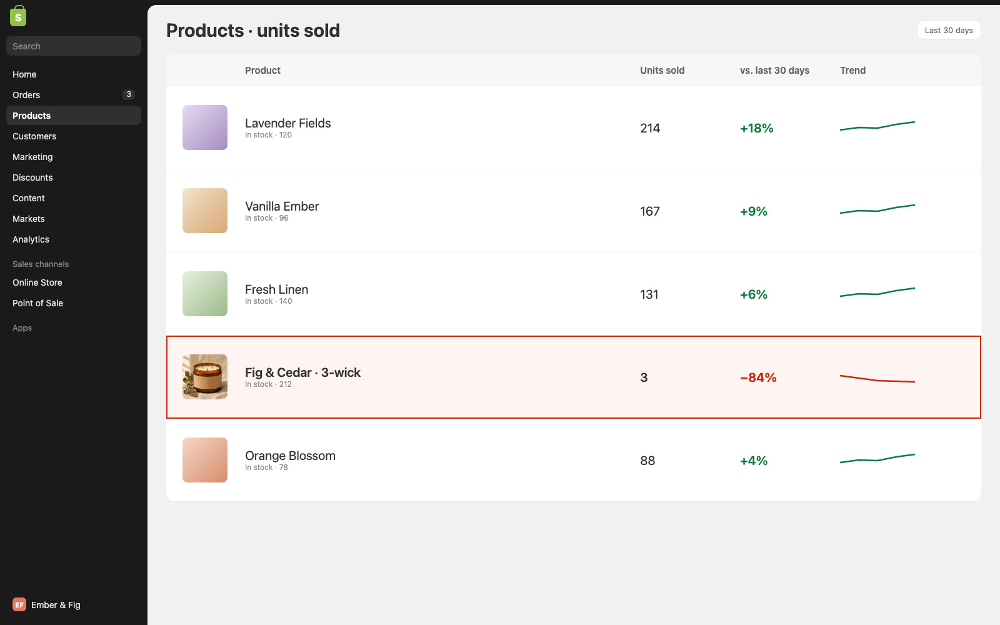

H224 · Cat-candle ad · A: text + reference images · Nov 15 story
I guess we'll never know
1. A cat lady sits on her sofa at night; candles burn all over her apartment, her cat beside her.
2. She scrolls the Fig & Cedar product page up and down, searching. She does not buy.
3. Inner voice, lips closed, the camera circling her: "Are these safe for cats?"
4. She finds nothing, gets annoyed (shown only), closes the site: "I guess we'll never know."
5. The High flip drops to the owner reading her sales: "I guess no one's interested in Fig and Cedar. No one wants this. Time to discontinue the product line." She blows out the candle.
6. Scout: "Don't guess why your shoppers don't buy." End screen: "Scout interviews your shoppers for you. Get free early access."
Emile's words, kept exactly. The technique: a plain written prompt; the cast and rooms come from reference photos, and every camera move is written in words. The only video sent is the end screen.
Shot list (30 s)
Time
Who
What
Line
Assets
0-3s
Shopper + cat
Opening shot. Wide, slow arc toward her on the sofa; candles everywhere, laptop open, the cat beside her.
High flip: the camera rises over her until it looks straight down, the back of the sofa sweeps across the frame as the view flips, and it comes out level on the owner at her desk.
Only these 12 files plus the prompt below. One job per file: a face, a cat, a room, a screen or a prop.
@Image1 shopper face@Image2 the cat@Image3 her apartment

@Image4 her screen

@Image5 owner face@Image6 studio

@Image7 owner screen@Image8 the jar@Video1 end screen (picture only)
@Audio1 audio
@Audio1 shopper voice
@Audio2 audio
@Audio2 owner voice
@Audio3 audio
@Audio3 Scout voice
12 files, uploaded in this order: 8 images, 1 video (4.5 s), 3 audio (23.05 s). The voice clips carry other words; Seedance takes only their sound. Job: Seedance 2.5, 30 s, 9:16, draft 480p, set in job.json, not in the prompt. Not sent to Seedance: everything else on this page.
994 words · the five spoken lines match the story word for word
【Generation Goal】
Generate a warm live-action story film in close framing. Please note that this is not video editing. A cat lady can't find whether a candle is safe for cats and leaves without buying; its maker reads the low sales as nobody wanting it, and Scout's voice tells her not to guess.
【Reference Asset Roles】
The shopper maps to @Image1; use only her face, dark bob with bangs and cream cardigan; do not use the background.
The grey tabby cat maps to @Image2; use only the cat; do not use the sofa or the sleeve.
The shopper's apartment references @Image3; use only the room: sofa with cream throw, floor lamp, bookshelf and the many lit candles, in warm night light; do not use the closed laptop on the stool.
The shopper's laptop screen references @Image4: the Fig & Cedar product page. Copy its text exactly, only on her laptop screen; do not use the mouse cursor.
The owner maps to @Image5; use only her face, auburn side braid and rust knit sweater; do not use her pose or background.
The owner's studio references @Image6; use only its brick wall, shelves of unlit stock jars, wooden desk and laptop; do not use its dark laptop screen or the lit jar on the desk.
The owner's laptop screen references @Image7: the units-sold list, Fig & Cedar at 3 (-84%). Copy its text exactly, only on her laptop screen.
The Fig & Cedar jar maps to @Image8; use only the amber jar, blank kraft label and three wicks; do not use the leaves or cloth.
Scout's end screen references @Video1; use only its picture, only in 25-30s; do not use its sound.
@Audio1 is used only for the shopper's voice timbre; do not use its words or its upbeat energy.
@Audio2 is used only for the owner's voice timbre and pace; do not use its words.
@Audio3 is used only for Scout's calm female voice timbre; the words come only from the lines below.
【Subjects and Relationships】
One shopper (@Image1), one cat (@Image2), one owner (@Image5), one Fig & Cedar jar (@Image8); Scout is only a voice until the end screen. The shopper's candles (@Image3) are generic; none is the Fig & Cedar jar. The Fig & Cedar jar (@Image8) is the only lit candle in the owner's studio (@Image6). The two women never meet. The shopper never clicks Add to cart.
【Event Script】
0-3s: [Opening shot. Wide, slow arc toward the shopper] The shopper (@Image1) sits on the sofa in her night apartment (@Image3), laptop open on her lap, the cat (@Image2) beside her. At the end, the screen glow lights her face.
3-5s: [Hard cut. Over-the-shoulder close-up on her screen, static] The shopper's (@Image1) fingers scroll the product page (@Image4) on the trackpad down, then back up, searching. At the end, the page is back at the top.
5-8s: [Hard cut. Close-up, the camera slowly circles the shopper's (@Image1) face] The cat (@Image2) is soft behind her. The shopper (@Image1), in English, in the voice of @Audio1 (inner voice, close-mic, wondering, lips closed): {Are these safe for cats?} At the end, the camera has circled to her other side.
8-10s: [Hard cut. Medium close-up, static] The shopper (@Image1) scrolls the product page (@Image4) faster, up and down, finding nothing about pets; her jaw tightens, she exhales sharply through her nose and rubs her brow, silent. At the end, her hand rests on her brow.
10-13s: [Hard cut. Medium shot, static] The shopper (@Image1) closes the site to an empty browser, leans back and looks at the cat (@Image2). The shopper (@Image1), in English, in the voice of @Audio1 (inner voice, close-mic, resigned, lips closed): {I guess we'll never know.} At the end, she and the cat look at each other.
13-15s: [High flip, the only non-cut transition] The camera rises over the shopper (@Image1) until it looks straight down, the back of the sofa sweeps across the frame as the view flips 180 degrees, and it comes out level on the owner (@Image5) at her desk in the studio (@Image6). <whoosh> At the end, the camera is level on the owner.
15-21s: [Lands from the High flip. Medium close-up, slow push in] The owner (@Image5) at her desk, her laptop screen (@Image7) showing Fig & Cedar at 3, the lit Fig & Cedar jar (@Image8) beside the laptop. She sighs. The owner (@Image5), in English, in the voice of @Audio2 (on camera, lips moving, disappointed): {I guess no one's interested in Fig and Cedar. No one wants this. Time to discontinue the product line.} At the end, she looks at the jar.
21-23s: [Hard cut. Close-up, static] The owner (@Image5) leans in and blows out the Fig & Cedar jar (@Image8) <a soft puff of breath>; its three flames go out and smoke rises. At the end, the three wicks smoke.
23-25s: [Hard cut. Macro on the smoking wicks of the jar (@Image8), static] Thin smoke curls up as the studio (@Image6) dims; no person in frame. Scout, in English, in the voice of @Audio3 (off screen, calm, warm): {Don't guess why your shoppers don't buy.} At the end, only smoke remains.
25-30s: [Hard cut. End screen, locked off] Scout's end screen (@Video1) fills the frame. Scout, in English, in the voice of @Audio3 (off screen, calm): {Scout interviews your shoppers for you. Get free early access.} At the end, the end screen (@Video1) holds still.
【Maintain Consistency】
Hard cuts except the High flip. Each line finishes inside its shot. Exactly three voices: the shopper (@Audio1) only as an inner voice with lips always closed; the owner (@Audio2) on camera with lip sync; Scout (@Audio3) only off screen at 23-30s. One Fig & Cedar jar, only on the owner's desk. No cart notification and no purchase sound. On-screen text only on the two laptop screens and the end screen. (A soft, warm music bed, very low under the voices.) No subtitles appear on screen.
The High flip, for reading only
Illustration, not sent to Seedance
The move the prompt describes in words at 13-15 s. This clip is not uploaded.@Image3 at full size: her apartment. The closed laptop on the stool is fenced in the prompt; she holds her own laptop open on her lap.
Our draft before the sd25-pe compile
Illustration, not sent to Seedance
[Reference assets]
@Image1 is the shopper: her face, dark bob with bangs, cream knit cardigan. Face only.
@Image2 is her grey tabby cat. Cat only.
@Image3 is her apartment at night, lit candles on every surface. Room only; her laptop is open on her lap, not the closed one on the stool.
@Image4 is the Fig & Cedar product page, only on her laptop screen. No mouse cursor; she never clicks Add to cart.
@Image5 is the owner: her face, auburn side braid, rust knit sweater.
@Image6 is the owner's candle studio. Not its dark screen or its lit jar.
@Image7 is the owner's units-sold screen, Fig & Cedar at 3 (-84%), only on her laptop screen.
@Image8 is the Fig & Cedar jar, the only one.
@Video1 is Scout's end screen: picture only, only at 25-30s.
@Audio1 shopper voice, @Audio2 owner voice, @Audio3 Scout voice: timbre only, not their words.
[Story]
A cat lady in her candle-filled apartment scrolls a candle's product page looking for whether it is safe for her cat, finds nothing, gets annoyed and closes the site without buying. The camera flips down to the candle's maker, who reads the low sales as nobody wanting it, decides to discontinue it and blows the candle out. Scout: don't guess. Live-action, warm, close framing.
[Shots]
0-3s: [Wide, slow arc toward her] The shopper (@Image1) on her sofa in the night apartment (@Image3), dozens of lit candles everywhere, laptop open on her lap, the cat (@Image2) beside her.
3-5s: [Hard cut. Over her shoulder on the screen] Her fingers scroll the product page (@Image4) down, then back up, searching. She never clicks Add to cart.
5-8s: [Hard cut. Close-up, the camera slowly circles her face] Lips closed, screen glow, the cat soft behind her. Shopper (inner voice, @Audio1): {Are these safe for cats?}
8-10s: [Hard cut. Medium close-up, static] She scrolls faster up and down, finds nothing about pets; jaw tightens, sharp exhale through the nose, rubs her brow. Silent.
10-13s: [Hard cut. Medium shot, static] She closes the site to an empty browser, leans back, looks at the cat. Shopper (inner voice, @Audio1): {I guess we'll never know.}
13-15s: [High flip] The camera rises over her until it looks straight down, the back of the sofa sweeps across the frame as the view flips, and it comes out level on the owner (@Image5) at her desk (@Image6).
15-21s: [Lands from the High flip. Medium close-up, slow push in] The owner at her desk, laptop showing the units-sold list (@Image7), the lit Fig & Cedar jar (@Image8) beside it. She sighs. Owner (on camera, @Audio2): {I guess no one's interested in Fig and Cedar. No one wants this. Time to discontinue the product line.}
21-23s: [Hard cut. Close-up] She leans in and blows out the jar; the three flames go out, smoke rises.
23-25s: [Hard cut. Macro on the smoking wicks] The studio dims. Scout (off screen, @Audio3): {Don't guess why your shoppers don't buy.}
25-30s: [Hard cut. End screen (@Video1)] Scout (off screen, @Audio3): {Scout interviews your shoppers for you. Get free early access.}
[Notes]
Hard cuts except the High flip. Exactly three voices: the shopper only as an inner voice, lips always closed; the owner on camera; Scout off screen. No ka-ching, no cart notification, no purchase. One Fig & Cedar jar, on the owner's desk. Soft warm music bed, very low. No subtitles.
Checks and history
SD25-CHECK.md: the sd25-pe Final Checklist and Principles 1-11 with proof lines, plus which one @asset defines each person in each shot. Zero FAILs.
EVAL LOG: the two fresh-context checks of this round.
What changed from the last round: no cart click, no ka-ching, no orb and no Scout call scene; a new candle-filled apartment (@Image3); the orb image is no longer uploaded; Emile's new lines.
 @Image2 the cat
@Image2 the cat @Image3 her apartment
@Image3 her apartment @Image6 studio
@Image6 studio @Image8 the jar
@Image8 the jar